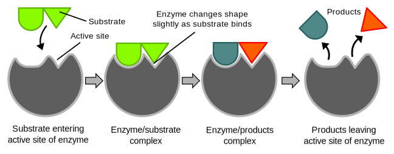

Proteins - Biology and Structure
A Brief Introdcution
Proteins are large biomolecules, or macromolecules, consisting of one or more long chains of amino acid residues. Proteins perform a vast array of functions within organisms, including catalysing metabolic reactions, DNA replication, responding to stimuli, and transporting molecules from one location to another. Proteins differ from one another primarily in their sequence of amino acids, which is dictated by the nucleotide sequence of their genes, and which usually results in protein folding into a specific three-dimensional structure that determines its activity.
A linear chain of amino acid residues is called a polypeptide. A protein contains at least one long polypeptide. Short polypeptides, containing less than 20–30 residues, are rarely considered to be proteins and are commonly called peptides, or sometimes oligopeptides. The individual amino acid residues are bonded together by peptide bonds and adjacent amino acid residues. The sequence of amino acid residues in a protein is defined by the sequence of a gene, which is encoded in the genetic code. Shortly after or even during synthesis, the residues in a protein are often chemically modified by post-translational modification, which alters the physical and chemical properties, folding, stability, activity, and ultimately, the function of the proteins. Sometimes proteins have non-peptide groups attached, which can be called prosthetic groups or cofactors. Proteins can also work together to achieve a particular function, and they often associate to form stable protein complexes.
Enzymes
- Enzymes
- Hormones
- Receptors
- Structural
Enzymes are macromolecular biological catalysts. Enzymes accelerate chemical reactions. The molecules upon which enzymes may act are called substrates and the enzyme converts the substrates into different molecules known as products. Almost all metabolic processes in the cell need enzymes in order to occur at rates fast enough to sustain life.
Enzymes are macromolecular biological catalysts. Enzymes accelerate chemical reactions. The molecules upon which enzymes may act are called substrates and the enzyme converts the substrates into different molecules known as products. Almost all metabolic processes in the cell need enzymes in order to occur at rates fast enough to sustain life.
A hormone is any member of a class of signaling molecules produced by glands in multicellular organisms that are transported by the circulatory system to target distant organs to regulate physiology and behaviour. Hormones have diverse chemical structures, mainly of 3 classes: eicosanoids, steroids, and amino acid/protein derivatives (amines, peptides, and proteins).
A receptor is a protein molecule that receives chemical signals from outside a cell. When such chemical signals bind to a receptor, they cause some form of cellular/tissue response. In this sense, a receptor is a protein-molecule that recognizes and responds to endogenous chemical signals, e.g. an acetylcholine receptor recognizes and responds to its endogenous ligand, acetylcholine.
Structural proteins confer stiffness and rigidity to otherwise-fluid biological components. Most structural proteins are fibrous proteins; for example, collagen and elastin are critical components of connective tissue such as cartilage, and keratin is found in hard or filamentous structures such as hair, nails, feathers, hooves, and some animal shells. Some globular proteins can also play structural functions, for example, actin and tubulin are globular and soluble as monomers, but polymerize to form long, stiff fibers that make up the cytoskeleton, which allows the cell to maintain its shape and size.